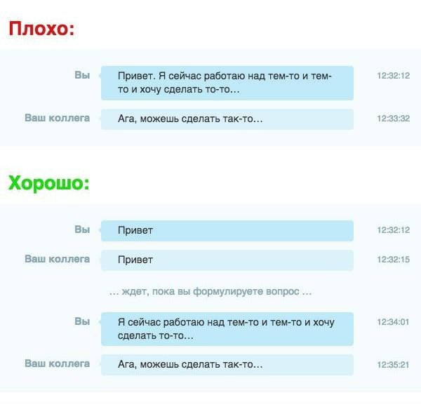

Не бойтесь задавать мета-вопросы в чате!
Да кто такие эти ваши мета-вопросы?!
Мета-вопрос — это вопрос, который подразумевает другие вопросы, например:
Но ведь это тратит время...
Не бойтесь задавать мета-вопросы! Иногда можно просто поздороваться с человеком, не обязательно что-нибудь спрашивать у него! У людей всегда есть время ответить на ваше сообщение, мы все не настолько занятые, и как общаться с нами — выбор каждого. Если вы видите ссылку на этот сайт у кого-либо в профиле — этот человек явно не против, если вы просто напишите ему "Привет", "Есть минутка?", "Здесь?" :^)
Суть одной картинкой
P.S: понимайте, что этот сайт говорит о том, что все могут разговаривать с людьми как хотят, но не нужно специально делать так, как изображено на следующей картинке.
